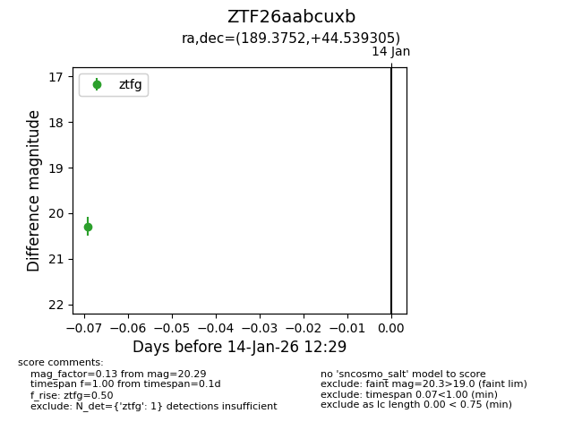
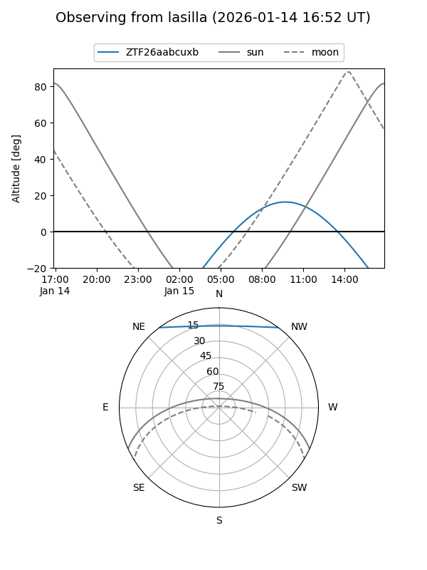
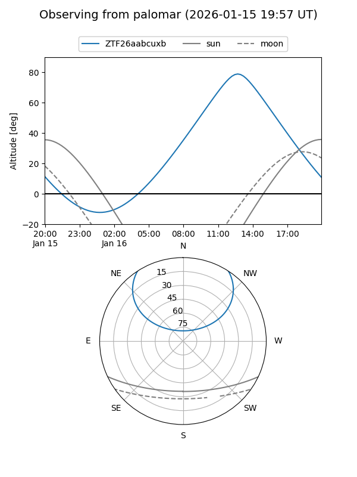

ZTF26aabcuxb
Target ZTF26aabcuxb at 2026-01-14 12:30
Aliases and brokers:
FINK: link
Lasair: link
ALeRCE: link
alt names
ZTF26aabcuxb (ztf,fink_ztf)
Coordinates:
equatorial (ra, dec) = 189.3752,+44.53931
equatorial (HMS+DMS) = 12:37:30.06,+44:32:21.50
galactic (l, b) = (131.1529,+72.36581)
Flags:
Photometry:
last ztfg=20.29
1 ztfg detections
Lightcurve

Visibility


Additional plots